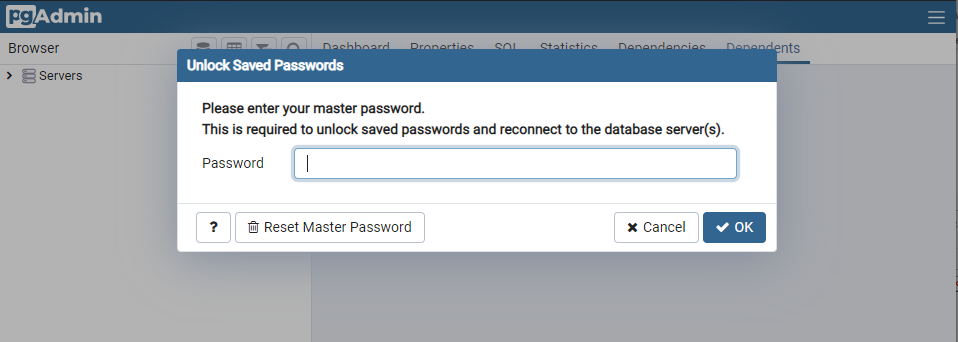

Getting Started for Developers - Ubuntu-based Linux distros
Pre-requisites
To get started on Linux, the following components are needed:
Git required to get the code.
CMake required to build the python environment and translations.
Miniconda 3 required to build the python environment
PostgreSQL for the database backend
NGINX for the system routing
Node.js required for the VideoRehab service
(Optional) Qt Creator for a UI to execute the
cmakecommand(Optional) PyCharm for a development UI (very recommended, though you could, in theory, use any other IDE or text editor)
Installing git, cmake and nodejs
Execute the following command (or install it using your favorite package manager):
sudo apt-get install git cmake nodejs
Installing Miniconda
MiniConda isn’t available in a Linux repository. You will need to download the bash installer script and follow the installation instructions.
Installing PostgreSQL
Simply execute the following command (or install it using your favorite package manager):
sudo apt-get install postgresql
If you need to change the default password, it will also needs to be changed in the configuration files.
Installing Redis Server
Simply execute the following command (or install it using your favorite package manager):
sudo apt-get install redis-server
If you are setting a user and a password, you will need to adjust the configuration files accordingly.
Installing (and running) NGINX
Simply execute the following command (or install it using your favorite package manager):
sudo apt-get install nginx
By default, nginx will be installed as a service. As such, you will have to properly configure it with the NGINX config files in the right path.
Alternatively, you could also disable the nginx service and run it manually when required with the shell script start_nginx.sh provided here.
Installing Qt Creator
While this step is optional, it could ease the environment building process. When installing Qt, only the Qt Creator is needed for this project. You would, however, include CMake from there or a supported Qt environment if you’re planning to also setup a development environment for OpenTeraPlus
Environment setup
1. Get the code!
To get started with this project and develop, clone the project in a working directory.
If you need a stable branch, you should clone the main branch. Otherwise, it is recommended to start and clone the dev branch. If using a command line interface, the following command should be used, replacing the <branch> tag:
git clone --recursive -b <branch> https://github.com/introlab/opentera.git
2. Generate the Python environment
CMake is used to generate the python environment. While, in theory, you could create a virtual environment by yourself using the requirements file, it is easier to simply use the cmake tool.
If you are using Qt Creator and that the CMake tool is properly set up, you should simply be able to Run CMake and then Build the project. Make sure that the target python-all is specified as the environment will not be properly generated otherwise.
On a command line interface, the following commands should be used (while in the <base folder>/teraserver directory):
cmake
cmake --build --target python-all
3. Databases setup
While the database structure by itself will be auto-generated the first time OpenTera is run, the databases will need to have been created beforehand.
Open the pgAdmin interface.
Login to the database manager using the password specified at the installation 
On the left side, expand the “Servers” section. If required, enter the password again.
The pgAdmin interface will then be ready for the next steps.
Creating users
A single user, teraagent with the default password tera will need to be created before creating the required databases. A different user and/or a different password could be used, but the configuration files will need to be adjusted accordingly.
Right-click on the
Login/Group Rolessection in the left tree of the pgAdmin interfaceSelect
Create...and thenLogin/Group Role...Fill the following informations in the dialog:
General-Name: teraagentDefinition-Password: teraPrivileges-Can login: On
Save the dialog
The teraagent user should have been created.
Creating databases
Each system service will requires its own database. The default database that needs to be created are as follow:
opentera, the main OpenTera service databaseopenterafiles, the database for the file transfer serviceopenteralogs, the database for the logging service
The steps to create a database are as follow. Those steps should be repeated for each database to create.
In pgAdmin, under
Servers, right-click on the correct server instance (for examplePostgreSQL 13).Select
Create...and `Database…”Fill the following informations in the dialog: *
General-Database: name of the database to create (see above) *General-Owner: teraagentSave the dialog
4. Videorehab service setup
That service requires a node.js environment to be set up.
In a command line console,
cd <base folder>/teraserver/easyrtcRun the
npm installcommand
The node.js environment should then be properly installed.
5. PyCharm setup (if required)
If using PyCharm, the correct Python interpreter and environment will need to be set up before being able to properly run the server.
Open PyCharm, loading the project from
<base folder>/teraserver/pythonIn
Files -> Settings-> Project : python -> Python Interpreter, click on theShow alloption in the selection bar.In the
Virtualenvtab, choose the existing environment. Change the interpreter to the following :...\teraserver\python\env\python-3.8\python.exe
The end result should look like this :

6. Self-signed certificates generation Self-signed certificates should be generated for the development server and to sign device certificates.
This can simply be done by running the CreatesCertificates.py script (directly in PyCharm if configured)
Starting the main OpenTera service
If all the configuration was properly done, you should now be able to run the main script, TeraServer.py.
Don’t forget to start the NGINX router beforehand and any other component that were not set to auto-run or as a Windows service.
If all went well, you should be able to see the About page in your browser: https://localhost:40075/about